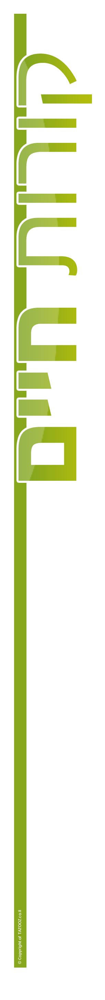

ג’סיקה נקש
תאריך לידה: 24/6/1983
ארץ לידה: צרפת
כתובת: נתניה, רחוב אברהם שפירא
נגישות: בעל רשיון נהיגה בתוקף,בעל רכב
טלפון: 0543172026
מספר זהות: 322044850
דוא"ל: jessicanakache@gmail.com
מצב משפחתי: נשואה + 5
השכלה
2024 : לימוד קורס QA ואוטומציה , המכללה לאוטומציה גל מטלון
2017-2018: לימוד קורס טכנאים מיכשור רפואי , מנהל הטכני כפר סבא
2004-2001: לימודי תעודה בתקשורת חזותית- עיצוב גראפי, מכללת אמונה ירושלים.
בלימודים היה לי קןרס של עריכת וידיאו שמאוד התחברתי אליו , אם לא היו האנשים אומרים לי שאין עבודה בתחום אז הייתי לומדת את זה יותר לעומק. הממוצע השנתית שלי בקורס הייתה 100 כל השנה
נסיון תעסוקתי
2019 – 2024 – טכנאית צילומי שיניים ומפענחת סיטי ,אור השן רשת מכוני צילומי שיניים
2010 – 2013 – מעצבת גרפי, חדשות חדרה
עיתון- העיצוב מודעות
2007 – 2008 – מעצבת גרפי, ג. יפית \ ביגביג לייט
פרסום , אריזות סטאנדים
2005 – 2007 – מעצבת גרפי, ג’רוסלם פוסט -
עיתון – עיצוב מודעות
שירות צבאי
.
פטורה בעקבות עלייה אחרי גיל 18
שפות
עברית: מעולה אנגלית: טובה מאוד צרפתית: שפת אם
שונות
מתנדבת בעמותה לעזרה לבית חולים לניאדו.יכולת למידה גבוהה ומהירה (בלי שום גאווה)מוטיבציה גבוהה לחזור לעבודה וללמוד דברים חדשים זריזה מאוד